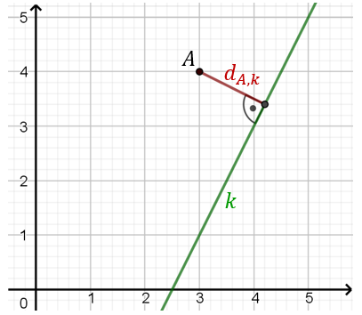

Odległość punktu \(P = (x_0,y_0)\) od prostej \(k\)
danej w postaci ogólnej: \(Ax+By+C=0\) możemy obliczyć ze wzoru: \[d_{P,
k}=\frac{|Ax_0+By_0+C|}{\sqrt{A^2+B^2}}\]
Oblicz odległość punktu \(A = (3,4)\) od
prostej \(k\) o równaniu: \(y=2x-5\).
Zaczynamy od przekształcenia równania
prostej \(k\) do postaci ogólnej: \[\begin{split} y&=2x-5\\[6pt] -2x+y+5&=0 \end{split}\] Teraz
możemy skorzystać ze wzoru: \[\begin{split} d_{A,
k}&=\frac{|-2\cdot3+1\cdot4+5|}{\sqrt{(-2)^2+1^2}}=\\[6pt]
&=\frac{|-6+9|}{\sqrt{5}}=\frac{3}{\sqrt{5}}=\frac{3\sqrt{5}}{5} \end{split}\] 
Napisz równania wszystkich prostych, które są jednocześnie styczne do paraboli o
równaniu \(y=\frac{1}{4}x^2-1\) i do okręgu o równaniu \(x^2+(y+6)^2=8\).
\(y=x-2, y=-x-2, y=\sqrt{17}x-18,y=-\sqrt{17}x-18\)